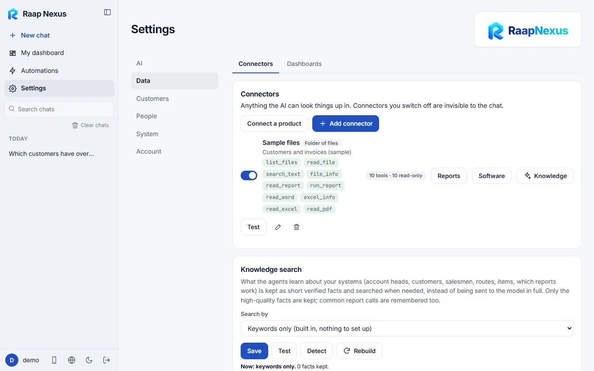
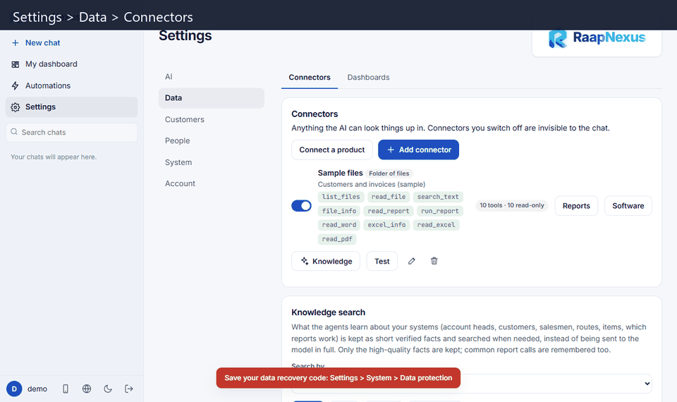
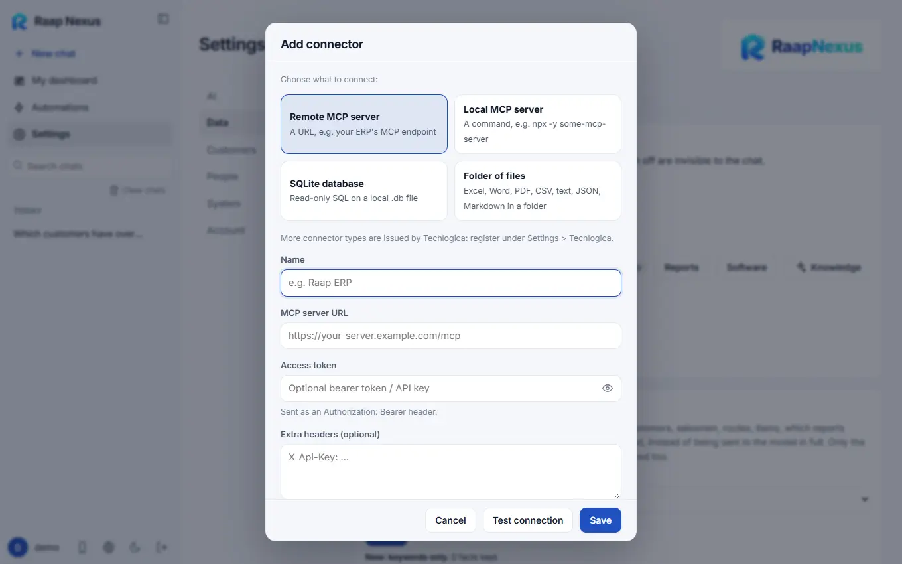

Raap Nexus
Raap NexusConnectors: connect your data
A connector is how the AI looks things up: your ERP, a database or a folder of files. All connectors are read-only.
What a connector is
Anything the AI can look things up in is a connector. Raap Nexus never copies your systems; it asks them questions when you ask the AI a question. Connectors you switch off are invisible to the chat.

Add a connector
- Open Settings > Data > Connectors and press Add connector.
- Choose the type of thing you are connecting (Connector types).
- Give it a Name (and, if you like, a short description such as "Sales, stock and customer data for our retail branches").
- Fill in the address, file or folder, and any login. Use a read-only database user wherever a login is asked.
- Press Test connection. When it works, press Save.


Tick the option to study this system first and an agent explores it read-only for a few minutes, noting what the business is: chart of accounts, customers, salesmen codes, routes, items and which reports work. Every later chat starts with that knowledge (Knowledge).
On a connector card
| Control | What it does |
|---|---|
| Switch | The master switch. Off means no agent and no chat can use it. |
| Test | Checks the connection and lists the tools it offers. |
| Knowledge | What the agent knows about this system (Knowledge). |
| Reports | For software that answers through report files: which reporting tool it uses and which reports can run (Connector types). |
| Software | Which software this is, so Techlogica's profile for it can be linked (Connector types). |
| Edit | Change the address, login or description. |
Always connect with a read-only database user or replica. Raap Nexus only ever runs read statements, but a read-only user is the real protection.
Which connector may which agent use? Each agent card has its own switches (What each agent can use), and each dashboard chooses its own connectors (Dashboard settings).